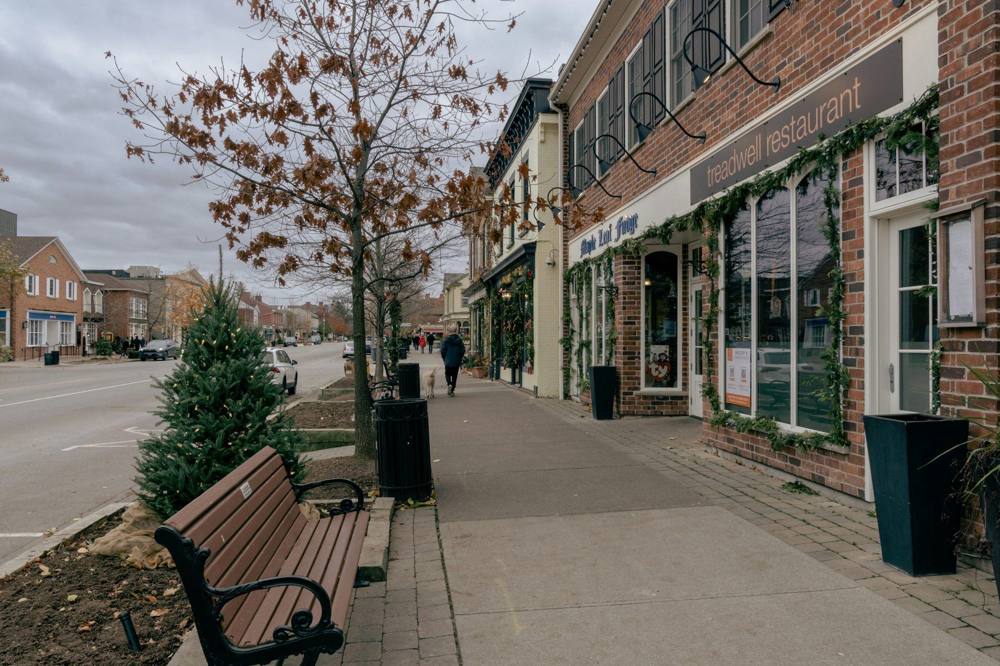

Where should we go this weekend?
Pick the kind of memory you want to make — romantic, scenic, cozy, adventurous, or quiet — and open the guide that fits the mood.
Romantic & Slow
For anniversaries, birthdays, spa days, historic villages, lakefront walks, and relaxed dinners.
Big Nature Wow
For turquoise water, cliffs, forests, fall colours, waterfalls, lakes, and first-Canada reactions.
Food & Wine
For wineries, good restaurants, coffee stops, small-town wandering, and minimal hiking pressure.
Fall Colours
For the most Canadian autumn experience: lookouts, scenic roads, cozy layers, and golden photos.
First Winter
For snow, cabins, fireplaces, skating, quiet forests, and Shreya’s first real Canadian winter moments.
Cozy Stay First
Start with the cabin, cottage, or glamping stay, then build the weekend around it.
The best trips to start with
These are the strongest destination pages and the most useful weekend options from Scarborough.
Tobermory / Bruce Peninsula
Turquoise water, The Grotto, Flowerpot Island, and the biggest first-Canada wow factor.
Muskoka Cottage Country
The classic Canada feeling: lakes, docks, forests, cottages, fall colours, and slow weekends.
Elora Gorge Village
Romantic stone village, gorge views, spa energy, and one of Ontario’s most special overnight escapes.

Prince Edward County
Beaches, dunes, wineries, small towns, and one of the best relaxed summer weekends.
Algonquin Park
The strongest fall colours and wilderness experience within driving distance of the GTA.

Niagara-on-the-Lake
Historic streets, wineries, restaurants, lakefront walks, and easy romance.
Best Day Trips From Scarborough
For the days when you want a beautiful experience without booking a hotel. Organized by romance, nature, photography, and drive time.
Romantic Day Trips
Elora, Paris, Niagara-on-the-Lake — soft, pretty, walkable, and easy to enjoy slowly.
Nature Day Trips
Mono Cliffs, Dundas Peak, Eugenia Falls — scenic trails and lookouts without needing a full weekend.
Photo-Worthy Trips
Torrance Barrens, Lion’s Head, Rock Dunder — the places chosen specifically for capturing the moment.
Places That Don’t Feel Real
These are the places that go beyond “nice views.” They are quiet, strange, dramatic, or emotionally memorable — the kind of beauty that is hard to capture with eyes, let alone a camera.
Torrance Barrens
One of Ontario’s most romantic night-sky experiences.
Lion’s Head Lookout
A Georgian Bay cliff view that feels impossible the first time you see it.
Rock Dunder
A short hike with a huge Rideau Lakes reward.
Silent Lake
No motorboats — just water, forest, and rare quiet.
Indian Head Cove
White limestone and water so blue it barely feels like Ontario.
Eugenia Falls
A 30-metre escarpment waterfall hiding beside a tiny village.
Warsaw Caves
Beginner-friendly caves, forest trails, and limestone geology.
High Falls, Algonquin
A softer, quieter Algonquin water-and-forest add-on.
Dundas Peak
A dramatic valley overlook close enough for a spontaneous day trip.
Aman’s Top Picks
A simple ranking for quick decisions — based on wow factor, romance, drive-worthiness, photos, and overall experience.
Everything we need for the next escape
Guides, stays, itineraries, day trips, and secret picks are organized so the next adventure feels easy, intentional, and worth the drive.
Weekend Itineraries
Slow, couple-friendly plans that focus on one region at a time instead of exhausting multi-stop trips.
Open itinerariesRomantic Stays
Cabins, cottages, boutique hotels, and unique stays organized around value and experience.
Open stays